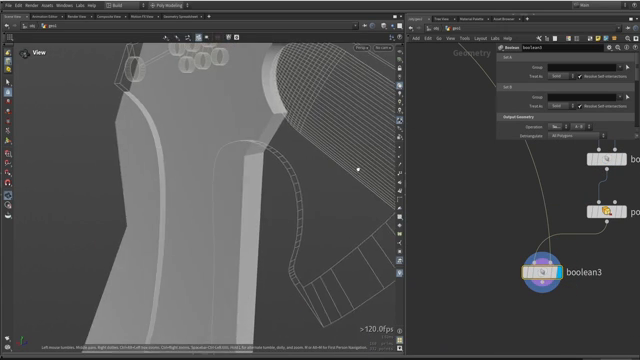
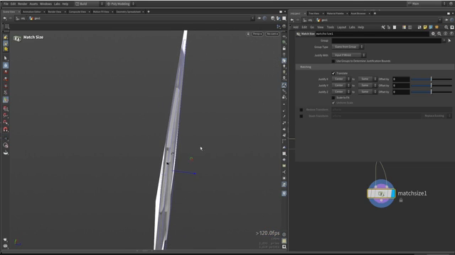

Houdini で斧を作る 3 — ざっくり描いて引き算で揃える
出典: Axe modeling || Houdini tutorial （Simon Houdini さん / 1:07:59 / 英語）の 24:55〜40:50 部分。 このページは、上記の動画を見ながら自分用にまとめた日本語の学習メモです。作者公式の翻訳ではありません。 前回は刃のメインシェイプを立ち上げるでした。
この記事で扱うこと
刃の上に重なる金属プレートを2層作ります。 ここで出てくる考え方が、このチュートリアル全体でいちばん役に立つところだと思いました。
1. ざっくり描いて、引き算で揃える
中央の金属プレートは、刃のほとんどを覆いながら一部だけ形が違います。 前回のようにカーブで正確にトレースしようとすると大変です。
完璧にトレースするのではなく、とてもざっくりした形を描きます。 そして元の刃で引き算します。そうすれば 輪郭が勝手にぴったり揃います。
気にするのはプレート固有の形をしている部分だけで、 刃と共通する輪郭は「だいたい外側を通っていればいい」という描き方をします。
この線を完璧になぞろうとしたら、きれいに仕上げるのに何時間もかかります。 一度の引き算で済むなら、そのほうがずっと速いのです。
これがプロシージャルモデリングらしい発想だと思いました。 形を「描いて合わせる」のではなく、「演算で合わせる」という切り替えです。
2. プレートを組み立てる

- 前回作ったチューブで前面のくぼみを切り抜きます。
ここでも
Transform from Centroidで位置を合わせます PolyExtrudeで厚みを付け、形を閉じます- 元の刃の形状で
Booleanの Subtract をかけます。これで輪郭が確定します - 前回開けた穴を
Mergeでまとめ、まとめて引き算します
動画では Merge でまとめすぎてしまい、
「これは繋ぎすぎですね」と配線を引き直す場面がありました。
穴の形は共通なので、あとから大きさを変えれば全部に反映されます。
面取りを足す
参照写真を見ると、プレートの縁に面取り（チャンファー）が入っています。
PolyBevel をエッジに当てて Enter で確定するだけです。
範囲を絞りたい場合は、前回と同じくグループを作ってその範囲だけベベルできます。 動画では前面全体にかけていましたが、プリミティブを2つ選んでしまって 「前面だけにしましょう」と選び直す場面もありました。
3. Match Size でプレートを重ねる

作ったプレートを刃の上に載せる段になって、 重なる位置がずれていることに気づきます。 手で数値を入れて合わせることもできますが、プロシージャルなやり方があります。
それが Match Size です。
| パラメータ | 設定 |
|---|---|
Justify With | Input 2 Bound（2つ目の入力の境界に合わせる） |
Justify X / Justify Y | None（動かさない） |
Justify Z | Min → Max（奥行き方向だけ、端を合わせる） |
これでプレートが刃の上に、ぴったり隙間なく載ります。 Z 軸を選んでいるのは、この作例で奥行きにあたる軸だからです。
各軸には Offset by のスライダーもあるので、
意図的に少し浮かせたい場合はここで調整できます。
デフォルトでは完全に密着します。
4. 上層のプレートも同じ流れで
2枚目のプレートも、基本は同じ手順です。ここで補足されていた小技をいくつか。
法線で面を選ぶ
「Z軸のマイナス方向を向いている面をすべて反転させたい」といった指定は、
法線をもとにグループを作ることでできます。
Group Create でその条件を作り、Reverse に渡します。
同じ考え方で「前面のプリミティブだけ」を front というグループにして、
そこにだけ処理をかける、という使い方もしていました。
2D の面のまま引き算する
シリンダー2本を追加で引き算する場面では、 「これはまだ2Dの平面で、面を引き算しているだけです。それで正しいです」 と説明されていました。厚みを付けるのは引き算のあとで構いません。
5. ハイポリの見え方を確かめる
最終的にハイポリで見たときに破綻しないか、この段階で確認します。 「完璧ではないけれど動く」簡易的な方法として紹介されていた手順です。
Fuseで点をまとめます- エッジにベベルをかけます（動画では角度
35度あたりで、必要な箇所だけに効かせていました） Subdivideでサブディビジョンをかけます- 端の処理が気になる場合は三角化してからもう一度サブディビジョンします
そのあと全体を Merge して Match Size で位置を合わせ、
ボクセル化すればハイポリの雰囲気が確認できます。
まだエッジが目立つようなら、やることは単純です。 点を増やせばいいだけです。 点を選んでベベルすれば点が増えます。
この記事のまとめ
- 完璧にトレースせず、ざっくり描いて元の形状で引き算すると輪郭が勝手に揃います
- 共通の穴は
Mergeでまとめて引き算します。1か所直せば全部に反映されます - 面取りは
PolyBevel。範囲を絞るならグループを併用します Match SizeでJustify WithをInput 2 Boundにし、 合わせたい軸だけ Min/Max、他は None にすると密着しますOffset byで意図的に浮かせることもできます- 法線を条件にグループを作れば、「マイナス方向を向いた面だけ反転」といった処理ができます
- ハイポリの確認は
Fuse→ ベベル →Subdivideの簡易手順で十分です
次はハンドル（柄）とグリップを作ります。